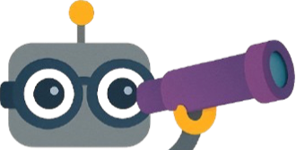

Introducing the VIsual Representation ALignment (VIRAL)
VIsual Representation ALignment (VIRAL) is a simple but effective regularization strategy that aligns the internal visual representations of MLLMs with those from pretrained vision foundation models (VFMs). By explicitly supervising intermediate visual tokens with rich VFM features, VIRAL preserves semantically meaningful visual information that would otherwise be discarded under text-only learning.

 VIRAL introduces an auxiliary regularization objective on the visual pathway to prevent MLLMs from discarding detailed attributes during training.
VIRAL, when trained with DINOv2 as the vision foundation model (VFM), consistently produces more accurate visually grounded responses and achieves substantial improvements over standard baselines across diverse vision encoders, including CLIP and SigLIPv2!
Pilot study
(a) baseline visual instruction tuning, (b) re-injecting visual features from the post-projection layer, (c) re-injecting from the pre-projection layer, and (d) the proposed visual representation alignment.
(e) Layer-wise alignment between visual tokens in MLLMs and vision encoder features measured by CKNNA, with shaded regions highlighting middle layers that are especially important for visual understanding. (f) Benchmark performance corresponding to (a–d)
Do MLLMs undergo visual information loss?
MLLMs are trained with text-only supervision, causing their visual features to drift from the encoder’s rich representations. We measure this with CKNNA and observe a sharp drop in similarity to CLIP features across layers.
Is preserving visual information beneficial?
Motivated by the observation that internal visual representations of MLLMs diverge from the encoder’s original features, we ask whether re-injecting them could help. We add a residual connection that feeds the input visual features of the language model back into its mid-layers. This preserves alignment with the encoder and yields consistent performance gains on multimodal benchmarks.
Can we compensate visual information with raw vision encoder feature?
We first tested re-injecting raw vision encoder features into mid-layers via a residual branch, but this degraded performance as the features were not language-aligned and disrupted intermediate representations. To address this, we introduce a more principled strategy by explicitly aligning intermediate visual representations with frozen encoder features through a Visual Representation Alignment (VRA) loss.
This approach yields general improvements, though limitations remain: encoder features can also transmit their inherent biases, as observed in MMVP.
VIRAL
What should serve as the alignment target?
While aligning multimodal models with their own encoder features preserves some visual cues, it is fundamentally constrained by the encoder’s representational capacity. To overcome this limitation, we leverage stronger vision foundation models (VFMs) as teachers, providing richer, vision-centric targets.
Building on this insight, we introduce VIRAL, which aligns intermediate MLLM representations to features from pretrained VFMs, thereby preserving more informative visual semantics than those available from the input encoder alone.
Building upon our findings in visual representation alignment, we align visual pathway representation from MLLMs to strong, informative representations from VFMs to improve the vision understanding performance of MLLMs.
Effect of visual representation alignment
VIRAL demonstrates its effectiveness through evaluations on benchmarks covering vision-centric (CV-Bench2D, What's Up, and MMVP), hallucination (POPE), and general multimodal tasks (MMStar, MME). Across identical training conditions, VIRAL consistently surpasses the baseline, with its strongest improvements on fine-grained visual understanding. These gains are achieved by leveraging DINOv2 as the VFM.
Generally applicable to MLLMs across diverse vision encoders.
Our method consistently boosts MLLM performance on vision-centric tasks by aligning intermediate visual features with a strong vision encoder. Gains persist even with SigLIPv2, showing that regularizing visual representations benefits MLLMs beyond compensating for contrastive pretraining limits.
| Language Model | Vision Encoder | VRA Loss | CV-Bench2D | MMVP | What's Up | POPE | MMStar | MME |
|---|---|---|---|---|---|---|---|---|
| Vicuna-7B-1.5 | CLIP | 56.82% | 28.20% | 40.13% | 85.70% | 33.93% | 1650.21 | |
| 59.67% | 33.33% | 48.55% | 87.43% | 33.93% | 1694.52 | |||
| SigLipv2 | 58.90% | 28.22% | 40.90% | 90.13% | 37.20% | 1738.96 | ||
| 62.66% | 33.11% | 44.40% | 90.77% | 37.20% | 1835.62 |
Although using a much stronger vision encoder, we observe that adopting our regularization loss also leads to consistent improvements.
Generally applicable to MLLMs across model scales and LLM backbones.
Experiments with Qwen2.5-7B and a scaled-up Vicuna-1.5-13B show that VIRAL follows a scaling trend and generalizes across different LLM backbones.
| Vision Encoder | Language Model | VRA Loss | CV-Bench2D | MMVP | What's Up | POPE | MMStar | MME |
|---|---|---|---|---|---|---|---|---|
| CLIP | Qwen2.5-7B | 58.97% | 33.47% | 59.08% | 85.88% | 39.20% | 1743.56 | |
| 60.50% | 36.07% | 63.57% | 84.92% | 39.67% | 1765.65 | |||
| Vicuna-1.5-13B | 57.51% | 39.33% | 44.44% | 87.12% | 34.47% | 1599.04 | ||
| 58.97% | 45.33% | 62.26% | 87.79% | 37.00% | 1636.62 |
Across different LLM backbones, the regularization loss remains effective and yields consistent improvements.
Key Improvements
With VIRAL, performance on vision-centric tasks like counting and spatial reasoning improves significantly, outperforming LLaVA-7B-1.5 on challenging visual questions.
The left part presents PCA visualizations of intermediate representations, demonstrating that VIRAL yields more structured, semantically meaningful visual embeddings. The right part illustrates instance counting and spatial relation tasks, highlighting scenarios where VIRAL correctly answers questions while the baseline fails.
Ablation study on key design components
We identify optimal visual features and layers for aligning MLLM representations. We adopt DINOv2 as the default encoder. Layer-wise analysis shows the 16th layer yields the best results, with single-layer alignment outperforming multi-layer targets. Finally, we compare direct feature alignment with relation-based objectives over self-similarity matrices.
| VFM | Layer | Objective | CV-Bench2D | MMVP | What's Up | POPE | MME |
|---|---|---|---|---|---|---|---|
| Baseline | 56.82% | 28.20% | 40.13% | 85.70% | 1650.21 | ||
| Ablation on different VFMs | |||||||
| DINOv2 | 16 | Cos. Sim. | 59.67% | 33.33% | 48.55% | 88.32% | 1694.52 |
| CLIP | 16 | Cos. Sim. | 57.51% | 29.33% | 44.50% | 87.17% | 1548.49 |
| SAM | 16 | Cos. Sim. | 57.58% | 30.27% | 49.84% | 88.34% | 1648.77 |
| DAv2 | 16 | Cos. Sim. | 58.55% | 28.67% | 47.29% | 88.70% | 1682.42 |
| RADIO | 16 | Cos. Sim. | 57.59% | 31.80% | 47.35% | 88.52% | 1692.94 |
| VFM | Layer | Objective | CV-Bench2D | MMVP | What's Up | POPE | MME |
|---|---|---|---|---|---|---|---|
| Ablation on single-layer targets | |||||||
| DINOv2 | 4 | Cos. Sim. | 58.55% | 30.67% | 45.05% | 87.68% | 1720.36 |
| DINOv2 | 8 | Cos. Sim. | 58.28% | 27.70% | 48.32% | 88.43% | 1662.67 |
| DINOv2 | 12 | Cos. Sim. | 57.77% | 28.59% | 48.19% | 88.27% | 1648.88 |
| DINOv2 | 16 | Cos. Sim. | 59.67% | 33.33% | 48.55% | 88.32% | 1694.52 |
| DINOv2 | 20 | Cos. Sim. | 55.22% | 27.41% | 48.04% | 88.39% | 1705.97 |
| DINOv2 | 24 | Cos. Sim. | 55.77% | 27.48% | 47.99% | 88.10% | 1740.55 |
| DINOv2 | 28 | Cos. Sim. | 54.87% | 27.19% | 47.82% | 88.56% | 1755.86 |
| DINOv2 | 32 | Cos. Sim. | 56.12% | 26.52% | 47.60% | 87.32% | 1678.69 |
| Ablation on multi-layer targets | |||||||
| DINOv2 | 15–17 | Cos. Sim. | 59.32% | 28.00% | 47.17% | 87.61% | 1639.72 |
| DINOv2 | 14–18 | Cos. Sim. | 49.62% | 22.55% | 42.58% | 87.90% | 1444.32 |
| VFM | Layer | Objective | CV-Bench2D | MMVP | What's Up | POPE | MME |
|---|---|---|---|---|---|---|---|
| Ablation on different objectives | |||||||
| DINOv2 | 16 | Relation | 58.83% | 26.60% | 49.05% | 87.58% | 1674.30 |
| DINOv2 | 16 | Cos. Sim. | 59.67% | 33.33% | 48.55% | 88.32% | 1694.52 |
Ablation results across VFMs, layers, and objectives. Consistent gains are observed with VIRAL regularization.
Analysis
Conclusion
In this work, we propose VIRAL, a simple yet effective training strategy that aligns the internal visual representations of MLLMs with those from powerful vision foundation models. Our approach preserves fine-grained visual semantics often discarded under text-only supervision, enabling more accurate spatial reasoning and object grounding. Extensive experiments across diverse benchmarks validate the effectiveness and generality of our method, demonstrating that visual representation alignment significantly enhances both performance and training efficiency in multimodal learning.
Citation
If you use this work or find it helpful, please consider citing: